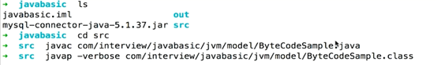
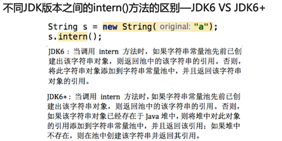

JVM
盘点了常考的JVM考点
- 对Java的理解
- Compile Once, Run Anywhere如何实现
- 为什么JVM不直接将源码解析成机器码去执行
- JVM如何加载.class文件
- 反射
- 类从编译到执行的过程
- 谈谈ClassLoader
- ClassLoader的种类
- 类加载器双亲委派模型
- 类的加载方式
- Java内存模型
- 引入
- 字面量和运行时常量池
- new String创建了几个对象
- 运行时常量池的动态扩展
- intern 的正确用法
- 总结
对Java的理解
| 平台无关性 | 面向对象 |
|---|---|
| GC | 类库 |
| 语言特性 | 异常处理 |
Compile Once, Run Anywhere如何实现
Javap是jdk自带的反汇编器，可以查看java编译器为我们生成的字节码。
Java源码会被编译成字节码文件，再由不同平台的JVM解析
Java语言在不同平台上运行时不需要重新编译
JVM在执行字节码时会将其转换为具体平台的机器指令
为什么JVM不直接将源码解析成机器码去执行
装备工作：每次执行都需要各种检查
生成字节码过程中，编译器可以预先作语法错误或者安全性方面的检查，出错机会更少
兼容性：也可以将别的语言解析成字节码
JVM如何加载.class文件
主要有 装载、链接和初始化
JVM通过ClassLoader加载class字节码文件，生成Class对象
校验：检查加载文件的正确性和安全性
准备：给类中的静态变量分配存储空间。
解析：将常量池内的符号引用转换为直接引用
初始化：对静态变量和静态代码块执行初始化工作
反射
JAVA反射机制是在运行状态中，对于任意一个类，都能够知道这个类的所有属性和方法；对于任意一个对象都能调用它的任意方法和属性；这种动态获取信息以及动态调用对象方法的功能称为java语言的反射机制
获取构造函数
getDeclaredConstructors(); 获取所有的构造函数
getDeclaredConstructor(参数类型); 这个方法会返回制定参数类型的
所有构造器，包括public的和非public的，当然也包括private的。
getConstructors(); 获取所有公开的构造函数
getConstructor(参数类型); 获取单个公开的构造函数
获取修饰符
getModifiers(); //获取所有修饰符
返回类型：整数类型，如果有两个修饰符，则返回两个修饰符之和，例如public static void getAll(){ }
返回值会是public和static之和
整数定义：
0–默认不写 1–public 2–private 4–protected
8–static 16–final 32–synchronized
64–volatile 128–transient 256–native
512–interface 1024–abstract
获取名字
返回类型：String,可以反射类名，方法名，构造函数名等等
getName(); //获取全名 例如：com.bean.Book
getSimpleName() //获取类名 例如：Book
获取字段（属性）
getFields() //返回一个Field类型数组，其中包含当前类的public字段，如果此类继承于某个父类，同时包括父类的public字段。其它的proteced和private字段，无论是属于当前类还是父类都不被此方法获取。
getField(String name) //参数可以指定字段 获取单个public字段
getDeclaredFields() //返回一个Field类型数组，结果包含当前类的所有字段，private、protected、public或者无修饰符都在内。另外，此方法返回的结果不包括父类的任何字段。 此方法只是针对当前类的。
getDeclaredField(String name) //获取单个字段 参数可以指定字段
获取方法
getMethods() //返回当前Class对象表示的类或接口的所有公有成员方法对象数组,包括已声明的和从父类继承或实现接口的方法 getMethod(String name) //获取单个公开的方法，参数是可以指定方法名
getDeclaredMethods() //获取所有的方法
注意：它不会获取系统自带的方法，不包括从父类继承和接口实现的方法
getDeclaredMethod(String name) //获取单个的所有方法 参数是可指定方法名
设置访问属性
clz.setAccessible(true) //可访问
clz.setAccessible(false) //不可访问
使用方法
method.invoke(Object obj,Object… args)
obj：如果是实例方法，则放个该方法的类对象给它
obj：静态方法，写null
args：方法的参数值，没有写null，或不写都行
类从编译到执行的过程
Ø 编译器将Robot.java源文件编译为Robot.class字节码文件
Ø ClassLoader将字节码转换为JVM中的Class
Ø JVM利用class
谈谈ClassLoader
它主要工作在Class装载的加载阶段，所有的Class都是由ClassLoader进行加载的，其主要作用是从系统外部获得Class二进制数据流，然后交给JVM进行链接、初始化等操作。
ClassLoader的种类
Ø BootStrapClassLoader：C++编写，加载核心库java.*
Ø ExtClassLoader：Java编写，加载扩展库Javax.*
Ø AppClassLoader：Java编写，加载程序所在目录
Ø 自定义ClassLoader：java编写，定制化加载
类加载器双亲委派模型
自底向上看如果曾经加载过，就直接返回。如果没有就向上委派给父类加载器。
最终到Bootstrap ClassLoader，如果它也没有，则进入Load JRE\lib\rt.jar或者-Xbootclasspath
（这个就是命令行输入-jar 接上jar包，接上的参数）选项指定的jar包中寻找。
如果没有找到，就向下继续寻找。
为什么它们都是extends URLClassLoader却能保证父类的继承关系：即custom父类是app，app父类是ext
Ext的parent是空，bootstrap clsloader是c++的
为什么要使用双亲委派模型
以System举例，如果类a打印了一句话加载了System的字节码，类b也打印一句话反复加载已加载的字节码，就会造成内存的浪费。
采用双亲委派的一个好处是比如加载位于rt.jar包中的类java.lang.Object，不管是哪个加载器加载这个类，最终都是委托给顶层的启动类加载器进行加载，这样就保证了使用不同的类加载器最终得到的都是同样一个Object对象。
为什么需要破坏双亲委派？
因为在某些情况下父类加载器需要委托子类加载器去加载class文件。受到加载范围的限制，父类加载器无法加载到需要的文件，以Driver接口为例，由于Driver接口定义在jdk当中的，而其实现由各个数据库的服务商来提供，比如mysql的就写了MySQL Connector，那么问题就来了，DriverManager（也由jdk提供）要加载各个实现了Driver接口的实现类，然后进行管理，但是DriverManager由启动类加载器加载，只能记载JAVA_HOME的lib下文件，而其实现是由服务商提供的，由系统类加载器加载，这个时候就需要启动类加载器来委托子类来加载Driver实现，从而破坏了双亲委派，这里仅仅是举了破坏双亲委派的其中一个情况。
类的加载方式
Ø 隐式加载 new
Ø 显式加载 loadClass，forName等
- 第一种：使用Class.forName(String classPath) //ClassPath：写需要反射的类名，一般是以包名.类名
注意事项：这里会产生一个ClassNotFoundException异常，我们需要将异常处理或者抛出
返回值：Class对象
- 第二种：直接使用Class clz = 类名.class
这种情况一般在我们知道有这个类的时候去使用
- 第三种：Class clz = 对象. getClass();
前提是对象已经被实例化出来了
两种类加载方式的区别：
Ø 隐式加载能够直接获取对象的实例，而显式加载需要调用 Class 对象的 newInstance() 方法来生成对象的实例。
Ø 隐式加载能够使用有参的构造函数，而使用 Class 对象的 newInstance() 不支持传入参数，如果想使用有参的构造函数，必须通过反射的方式，来获取到该类的有参构造方法。
forName和loadCLass的区别：
Ø 使用 loadClass() 方法获得的 Class 对象只完成了类装载过程中的第一步：加载，后续的操作均未进行。（还没有链接的）
Ø 使用 Class.forName() 方法获得 Class 对象是已经执行完初始化的了
Java内存模型
内存简介
地址空间的划分
JVM内存模型
程序计数器（Program Counter Register）
Ø 当前线程所执行的字节码行号指示器（逻辑）
Ø 改变计数器的值来选取下一条需要执行的字节码指令
Ø 和线程是一对一的关系即“线程私有”
Ø 对Java方法计数，如果是Native方法则计数器值为Undefined
Ø 不会发生内存泄漏
Java虚拟机栈（Stack）

Java虚拟机栈保存的主要内容为栈帧，每一次函数调用，都会有一个对应的栈帧被压入java栈，每一个函数调用结束，都会有一个栈帧被弹出java栈。
栈帧包含：本地变量表、操作数栈、返回地址等
虚拟机提供参数-Xss来指定线程的最大栈空间，决定了函数调用的最大深度。
Java 虚拟机栈会出现两种异常：StackOverFlowError 和 OutOfMemoryError。
StackOverFlowError 若 Java 虚拟机栈的大小不允许动态扩展，那么当线程请求栈的深度超过当前 Java 虚拟机栈的最大深度时，抛出 StackOverFlowError 异常。
OutOfMemoryError 若允许动态扩展，那么当线程请求栈时内存用完了，无法再动态扩展时，抛出 OutOfMemoryError 异常。

Iconst_0 是将int值0压入操作栈中，
Istone_2 是将操作数栈顶的元素(0)pop出来，存入局部变量表的第2个（0,1,2）位置中
Iload_0 将局部变量表的第0个元素压入操作数栈中
Iload_1 将局部变量表的第1个元素压入操作数栈中，由于是栈，所以2在1的上面。
Iadd 将操作数栈的元素弹出，然后相加后压入栈顶
Istore2 就是将栈顶的元素弹出放入局部变量表第2个位置中
iload_2 将局部变量中第2个元素压入操作数栈
ireturn 返回操作数栈顶元素。
返回后所有栈帧销毁
栈的内存不需要GC回收，自动销毁（运行完就回收了）。
递归为什么会引发java.lang.StackOverflowError异常
栈帧数超过虚拟机栈深度
本地方法栈
Ø 与虚拟机栈相似，主要作用于标注了native的方法
元空间与永久代
它们都是Java方法区的实现
元空间使用本地内存，永久代使用的是jvm内存
MetaSpace相比PermGen的优势
Ø 字符串常量池存在永久代中，容易出现性能问题和内存溢出
Ø 类和方法的信息大小难以确定，给永久代的大小指定带来困难
Ø 永久代会为GC带来不必要的复杂性（永久代在堆中）
Ø 方便HotSpot与其他JVM如Jrockit的集成
Java堆（Heap）
Java三大性能调优参数-Xms –Xmx –Xss的含义
Ø -Xss：规定了每个线程虚拟机栈（堆栈）的大小
Ø -Xms：堆的初始值
Ø -Xmx：堆能达到的最大值
一般会让-Xms=-Xmx因为，当heap不够用而发生扩容时会发生内存抖动，影响程序运行时的稳定性。
Java内存模型中堆和栈的区别-内存分配策略【-】
Ø 静态存储：编译时确定每个数据目标在运行时的存储空间需求
Ø 栈式存储：数据区需求在编译时未知，运行时模块入口前确定
Ø 堆式存储：编译时或运行时模块入口都无法确定，动态分配
Ø 管理方式：栈自动释放，堆需要GC
Ø 空间大小：栈比堆小
Ø 碎片相关：栈产生的碎片远小于堆
Ø 分配方式：栈支持静态和动态分配，而堆仅支持动态分配
Ø 效率：栈的效率比堆高
元空间、堆、线程独占部分间的联系-内存角度【】

不同JDK版本间intern()方法的区别

JDK8中
False
True
JDK6中：
FALSE
FALSE
在JDK1.6中所有的输出结果都是 false，因为JDK1.6以及以前版本中，常量池是放在 Perm 区（属于方法区）中的，熟悉JVM的话应该知道这是和堆区完全分开的。
使用引号声明的字符串都是会直接在字符串常量池中生成的，而 new 出来的 String 对象是放在堆空间中的。所以两者的内存地址肯定是不相同的，即使调用了intern()方法也是不影响的。如果不清楚String类的“==”和equals()的区别可以查看我的这篇博文Java面试——从Java堆、栈角度比较equals和==的区别。
intern()方法在JDK1.6中的作用是：比如String s = new String(“SEU_Calvin”)，再调用s.intern()，此时返回值还是字符串”SEU_Calvin”，表面上看起来好像这个方法没什么用处。但实际上，在JDK1.6中它做了个小动作：检查字符串池里是否存在”SEU_Calvin”这么一个字符串，如果存在，就返回池里的字符串；如果不存在，该方法会把”SEU_Calvin”添加到字符串池中，然后再返回它的引用。然而在JDK1.7中却不是这样的，后面会讨论。
下面代码
两个new string就会在heap中生成一个aa，然后intern将aa的副本放入常量池中，由于是副本所以指针也不一样，因此还是false；
JDK1.7以上
String s = newString(“1”)，生成了常量池中的“1” 和堆空间中的字符串对象。
s.intern()，这一行的作用是s对象去常量池中寻找后发现”1”已经存在于常量池中了。
String s2 = “1”，这行代码是生成一个s2的引用指向常量池中的“1”对象。
结果就是 s 和 s2 的引用地址明显不同。因此返回了false。
String s3 = new String(“1”) + newString(“1”)，这行代码在字符串常量池中生成“1” ，并在堆空间中生成s3引用指向的对象（内容为”11”）。注意此时常量池中是没有 “11”对象的。
s3.intern()，这一行代码，是将 s3中的“11”字符串放入 String 常量池中，此时常量池中不存在“11”字符串，JDK1.6的做法是直接在常量池中生成一个 “11” 的对象。
但是在JDK1.7中，常量池中不需要再存储一份对象了，可以直接存储堆中的引用。这份引用直接指向 s3 引用的对象，也就是说s3.intern() ==s3会返回true。>
String s4 = “11”， 这一行代码会直接去常量池中创建，但是发现已经有这个对象了，此时也就是指向 s3 引用对象的一个引用。因此s3 == s4返回了true。
看例1：
String s0=”kvill”;
String s1=”kvill”;
String s2=”kv” + “ill”;
System.out.println( s0==s1 );
System.out.println( s0==s2 );
结果为：
true
true
看例2：
String s0=”kvill”;
String s1=new String(”kvill”);
String s2=”kv” + new String(“ill”);
System.out.println( s0==s1 );
System.out.println( s0==s2 );
System.out.println( s1==s2 );
结果为：
false
false
false
例2中s0还是常量池中”kvill”的应用，s1因为无法在编译期确定，所以是运行时创建的新对象”kvill”的引用，s2因为有后半部分new String(“ill”)所以也无法在编译期确定，所以也是一个新创建对象”kvill”的应用;明白了这些也就知道为何得出此结果了。
例如：
String str1=”ABC”； 和String str2 = new String(“ABC”);
String str1=”ABC” 可能创建一个对象或者不创建对象，如果”ABC”这个字符串在JavaString池里不存在，会在JavaString池创建这个一个String对象(“ABC”).如果已经存在，str1直接reference to这个String池里的对象。String str2 = new String(“ABC”) 至少创建一个对象，也可能两个。因为用到new关键字，会在heap创建一个 str2 的String 对象，它的value 是 “ABC”.*同时，如果”ABC”这个字符串在java String池里不存在，会在java String池创建这个一个String对象(“ABC”).
引入
String，是 Java 中除了基本数据类型以外，最为重要的一个类型了。很多人会认为他比较简单。但是和 String 有关的面试题有很多，下面我随便找两道面试题，看看你能不能都答对：
Q1：String s = new String("hollis");定义了几个对象。
Q2：如何理解 String.intern()方法？
上面这两个是面试题和 String 相关的比较常考的，很多人一般都知道答案。
A1：若常量池中已经存在 “hollis”，则直接引用，也就是此时只会创建一个对象，如果常量池中不存在 “hollis”，则先创建后引用，也就是有两个。
A2：当一个 String 实例调用intern()方法时，JVM 会查找常量池中是否有相同 Unicode 的字符串常量，如果有，则返回其的引用，如果没有，则在常量池中增加一个 Unicode 等于 str 的字符串并返回它的引用；
两个答案看上去没有任何问题，但是，仔细想想好像哪里不对呀。
按照上面的两个面试题的回答，就是说 new String 会检查常量池，如果有的话就直接引用，如果不存在就要在常量池创建一个，那么还要 intern 干啥？难道以下代码是没有意义的吗？
1 | String s = new String("Hollis").intern(); 1 |
如果，每当我们使用 new 创建字符串的时候，都会到字符串池检查，然后返回。那么以下代码也应该输出结果都是 true?
1 | String s1 = "Hollis"; |
但是，以上代码输出结果为（base jdk1.8.0_73）：
1 | false |
不知道聪明的读者看完这段代码之后，是不是有点被搞蒙了，到底是怎么回事儿？
别急，且听我慢慢道来。
字面量和运行时常量池
JVM 为了提高性能和减少内存开销，在实例化字符串常量的时候进行了一些优化。为了减少在 JVM 中创建的字符串的数量，字符串类维护了一个字符串常量池。
在 JVM 运行时区域的方法区中，有一块区域是运行时常量池，主要用来存储编译期生成的各种字面量和符号引用。
了解 Class 文件结构或者做过 Java 代码的反编译的朋友可能都知道，在 java 代码被 javac 编译之后，文件结构中是包含一部分 Constant pool 的。比如以下代码：
1 | public static void main(String[] args) { |
经过编译后，常量池内容如下：
1 | Constant pool: |
上面的 Class 文件中的常量池中，比较重要的几个内容：
1 | #16 = Utf8 s |
上面几个常量中，s 就是前面提到的符号引用，而 Hollis 就是前面提到的字面量。而 Class 文件中的常量池部分的内容，会在运行期被运行时常量池加载进去。关于字面量，详情参考 Java SE Specifications。
补充:
字面量是指由字母，数字等构成的字符串或者数值，它只能作为右值出现，所谓右值是指等号右边的值，如：int a=123这里的a为左值，123为右值。
常量和变量都属于变量，只不过常量是赋过值后不能再改变的变量，而普通的变量可以再进行赋值操作。
例：
1 | int a;//a变量 |
new String创建了几个对象
下面，我们可以来分析下 String s = new String("Hollis"); 创建对象情况了。
这段代码中，我们可以知道的是，在编译期，符号引用 s 和字面量 Hollis 会被加入到 Class 文件的常量池中，然后在类加载阶段，这两个常量会进入常量池。
但是，这个“进入”过程，并不会直接把所有类中定义的常量全部都加载进来，而是会做个比较，如果需要加到字符串常量池中的字符串已经存在，那么就不需要再把字符串字面量加载进来了。
所以，当我们说<若常量池中已经存在 “hollis”，则直接引用，也就是此时只会创建一个对象>说的就是这个字符串字面量在字符串池中被创建的过程。
说完了编译期的事儿了，该到运行期了，在运行期，new String(“Hollis”);执行到的时候，是要在 Java 堆中创建一个字符串对象的，而这个对象所对应的字符串字面量是保存在字符串常量池中的。但是，String s = new String(“Hollis”);，对象的符号引用 s 是保存在Java虚拟机栈上的，他保存的是堆中刚刚创建出来的的字符串对象的引用。
所以，你也就知道以下代码输出结果为 false 的原因了。
1 | String s1 = new String("Hollis"); |
因为，== 比较的是 s1 和 s2 在堆中创建的对象的地址，当然不同了。但是如果使用 equals，那么比较的就是字面量的内容了，那就会得到 true。

1 | 不同版本的JDK中，Java堆和字符串常量池之间的关系也是不同的，这里为了方便表述，就画成两个独立的物理区域了。具体情况请参考Java虚拟机规范。 1 |
上图中 s1 和 s2 是两个完全不同的对象，在堆中有自己的内存空间，当然不相等了。
所以，String s = new String("Hollis");创建几个对象的答案你也就清楚了。
常量池中的“对象”是在编译期就确定好了的，在类被加载的时候创建的，如果类加载时，该字符串常量在常量池中已经有了，那这一步就省略了。堆中的对象是在运行期才确定的，在代码执行到 new 的时候创建的。
运行时常量池的动态扩展
编译期生成的各种字面量和符号引用是运行时常量池中比较重要的一部分来源，但是并不是全部。那么还有一种情况，可以在运行期像运行时常量池中增加常量。那就是 String 的intern方法。
当一个String实例调用intern()方法时，JVM 会查找常量池中是否有相同 Unicode 的字符串常量，如果有，则返回其的引用，如果没有，则在常量池中增加一个 Unicode 等于 str 的字符串并返回它的引用；
intern()有两个作用，第一个是将字符串字面量放入常量池（如果池没有的话），第二个是返回这个常量的引用。
我们再来看下开头的那个让人产生疑惑的例子：
1 | String s1 = "Hollis"; |
你可以简单的理解为String s1 = "Hollis";和String s3 = new String("Hollis").intern();做的事情是一样的（但实际有些区别，这里暂不展开）。都是定义一个字符串对象，然后将其字符串字面量保存在常量池中，并把这个字面量的引用返回给定义好的对象引用。如下图：
对于String s3 = new String("Hollis").intern();，在不调intern情况，s3 指向的是 JVM 在堆中创建的那个对象的引用的（如图中的s2）。但是当执行了 intern 方法时，s3 将指向字符串常量池中的那个字符串常量。
由于 s1 和 s3 都是字符串常量池中的字面量的引用，所以 s1==s3。但是，s2 的引用是堆中的对象，所以 s2!=s1。
intern 的正确用法
不知道，你有没有发现，在String s3 = new String("Hollis").intern();中，其实 intern 是多余的？
因为就算不用 intern，Hollis 作为一个字面量也会被加载到 Class 文件的常量池，进而加入到运行时常量池中，为啥还要多此一举呢？到底什么场景下才会用到 intern 呢?
在解释这个之前，我们先来看下以下代码：
1 | String s1 = "Hollis"; |
在经过反编译后，得到代码如下：
1 | String s1 = "Hollis"; |
可以发现，同样是字符串拼接，s3 和s4 在经过编译器编译后的实现方式并不一样。s3 被转化成 StringBuilder 及 append，而 s4 被直接拼接成新的字符串。
如果你感兴趣，你还能发现，String s4 = s1 + s2; 经过编译之后，常量池中是有两个字符串常量的分别是 Hollis、Chuang（其实 Hollis 和 Chuang 是String s1 = “Hollis”;和String s2 = “Chuang”;定义出来的），拼接结果HollisChuang 并不在常量池中。
如果代码只有String s4 = “Hollis” + “Chuang”;，那么常量池中将只有 HollisChuang 而没有 Hollis 和 Chuang。
究其原因，是因为常量池要保存的是已确定的字面量值。也就是说，对于字符串的拼接，纯字面量和字面量的拼接，会把拼接结果作为常量保存到字符串。
如果在字符串拼接中，有一个参数是非字面量，而是一个变量的话，整个拼接操作会被编译成StringBuilder.append，这种情况编译器是无法知道其确定值的。只有在运行期才能确定。
那么，有了这个特性了，intern 就有用武之地了。那就是很多时候，我们在程序中用到的字符串是只有在运行期才能确定的，在编译期是无法确定的，那么也就没办法在编译期被加入到常量池中。
这时候，对于那种可能经常使用的字符串，使用 intern 进行定义，每次 JVM 运行到这段代码的时候，就会直接把常量池中该字面值的引用返回，这样就可以减少大量字符串对象的创建了。
如一美团点评团队的《深入解析String#intern》文中举的一个例子：
1 | static final int MAX = 1000 * 10000; |
在以上代码中，我们明确的知道，会有很多重复的相同的字符串产生，但是这些字符串的值都是只有在运行期才能确定的。所以，只能我们通过intern显示的将其加入常量池，这样可以减少很多字符串的重复创建。
总结
我们再回到文章开头那个疑惑：按照上面的两个面试题的回答，就是说new String也会检查常量池，如果有的话就直接引用，如果不存在就要在常量池创建一个，那么还要intern干啥？难道以下代码是没有意义的吗？
1 | String s = new String("Hollis").intern(); |
new String 所谓的“如果有的话就直接引用”，指的是Java堆中创建的String对象中包含的字符串字面量直接引用字符串池中的字面量对象。也就是说，还是要在堆里面创建对象的。
而intern``中说的``“``如果有的话就直接返回其引用``”``，指的是会把字面量对象的引用直接返回给定义的对象。这个过程是不会在`` Java ``堆中再创建一个`` String ``对象的。
的确，以上代码的写法其实是使用 intern 是没什么意义的。因为字面量 Hollis 会作为编译期常量被加载到运行时常量池。
之所以能有以上的疑惑，其实是对字符串常量池、字面量等概念没有真正理解导致的。有些问题其实就是这样，单个问题，自己都知道答案，但是多个问题综合到一起就蒙了。归根结底是知识的理解还停留在点上，没有串成面。
https://blog.csdn.net/ShelleyLittlehero/article/details/81196418